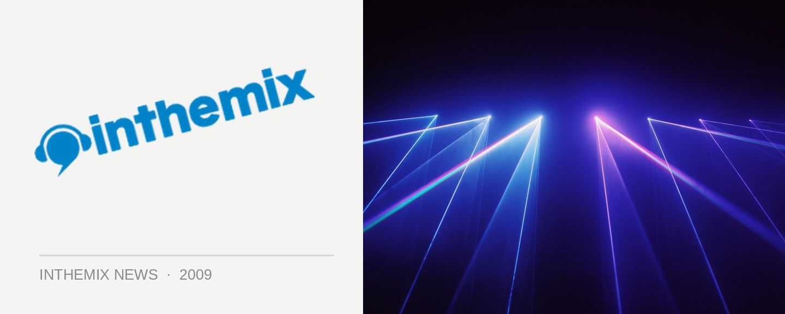

Thomas Schumacher tours in August
Berlin’s Thomas Schumacher finds his foundations in techno and house music, but in 2009 he’s as eclectic as ever as both a DJ and producer, and he’ll be bringing this heritage with him when he reaches Australia for a club tour in August. Recently he’s been releasing music on the inimitable Get Physical Music, playing parties around the world alongside his labelmates M.A.N.D.Y. and Booka Shade, and if you add that to his existing heritage he’s a more than capable choice of headliner for the next installment of Sneakerpeeps in Melbourne.
Thomas Schumacher tour dates:
Fri 7th Aug – Sneakerpeeps @ Prince Bandroom, Melbourne
Sat 8th Aug – Family, Brisbane
Sat 15th Aug – Lost Baggage, Sydney